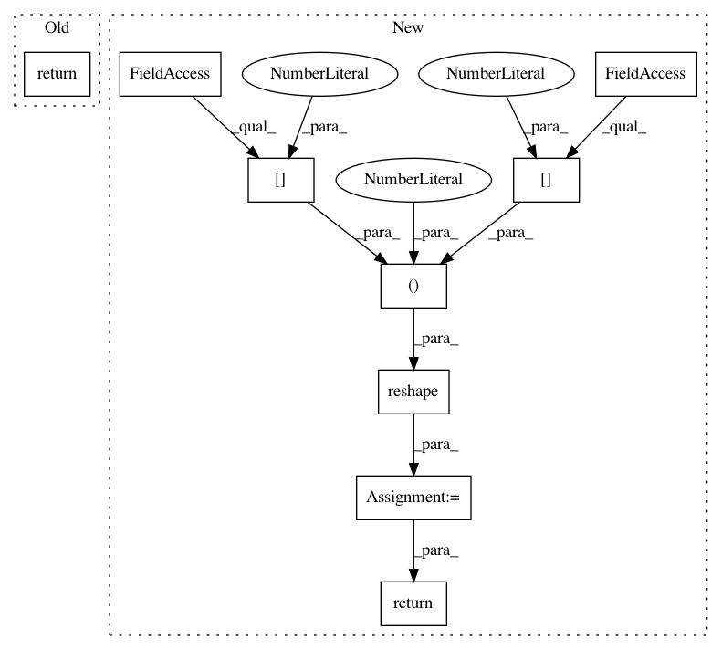

243d4737d1caaf7d586abc69addef16a08276231,keras/layers/convolutional.py,MaxPooling1D,get_output,#MaxPooling1D#Any#,83
Before Change
def get_output(self, train):
X = self.get_input(train)
output = downsample.max_pool_2d(X, ds=self.poolsize, st=self.stride, ignore_border=self.ignore_border)
return output
def get_config(self):
return {"name":self.__class__.__name__,
"pool_length":self.pool_length,
After Change
def get_output(self, train):
X = self.get_input(train)
X = theano.tensor.reshape(X, (X.shape[0], X.shape[1], X.shape[2], 1)).dimshuffle(0, 1, 3, 2)
output = downsample.max_pool_2d(X, ds=self.poolsize, st=self.st, ignore_border=self.ignore_border)
output = output.dimshuffle(0, 1, 3, 2)
return theano.tensor.reshape(output, (output.shape[0], output.shape[1], output.shape[2]))
def get_config(self):
return {"name":self.__class__.__name__,
"stride":self.stride,
In pattern: SUPERPATTERN
Frequency: 3
Non-data size: 9
Instances
Project Name: keras-team/keras
Commit Name: 243d4737d1caaf7d586abc69addef16a08276231
Time: 2015-07-03
Author: francois.chollet@gmail.com
File Name: keras/layers/convolutional.py
Class Name: MaxPooling1D
Method Name: get_output
Project Name: keras-team/keras
Commit Name: 243d4737d1caaf7d586abc69addef16a08276231
Time: 2015-07-03
Author: francois.chollet@gmail.com
File Name: keras/layers/convolutional.py
Class Name: Convolution1D
Method Name: get_output
Project Name: keras-team/keras
Commit Name: d788b8e9194f8125af7059bcc1b730dcc10f196e
Time: 2015-05-05
Author: mthrok@gmail.com
File Name: keras/preprocessing/image.py
Class Name:
Method Name: img_to_array